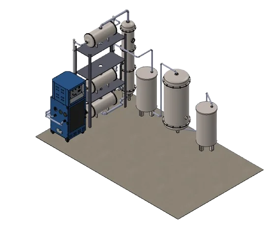
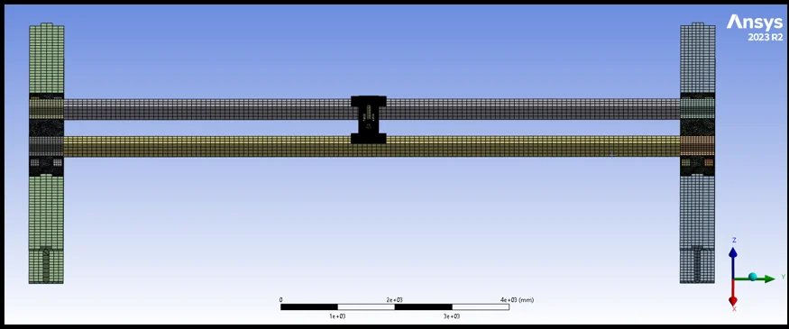
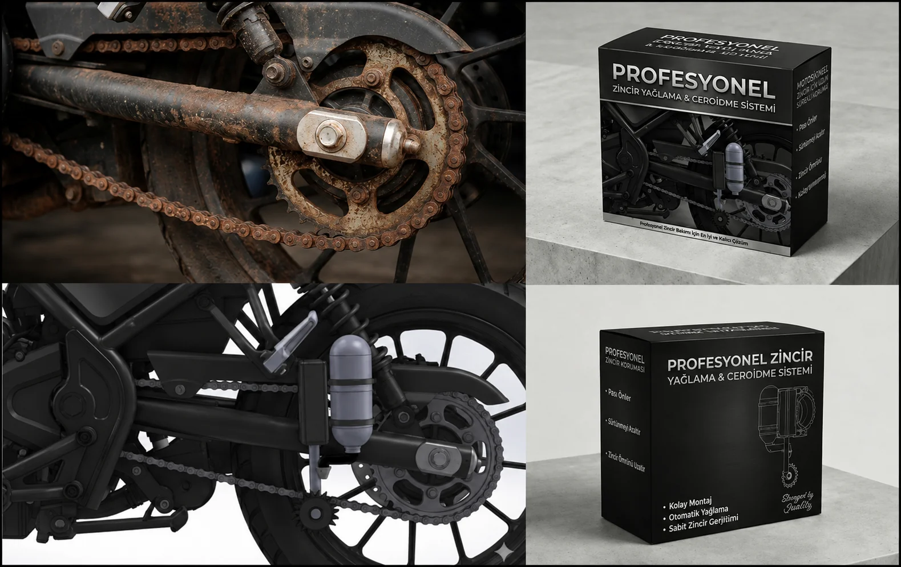
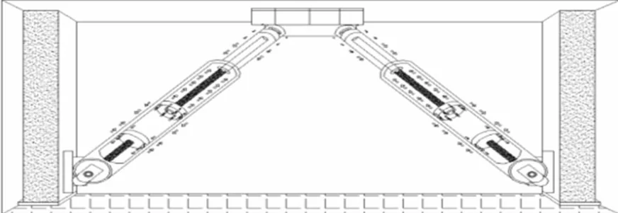

Engineering
Projects.

Industrial Ethyl Acetate Solvent Recovery System
ATEX-compliant process machine design recovering evaporated ethyl acetate from rotogravure printing lines with 90.79% efficiency. Features a 73-finned-tube overhead condenser, AISI 316L distillation column, and Zeolite 3A dehydration bed.
Explore Case Study →
Overhead Crane FEA & Structural Optimization
Static, modal, and transient FEA of a 24-ton capacity, 12-meter span double-girder overhead crane in ANSYS. Deflection was reduced by 54% to meet the L/1000 standard with a 7x Factor of Safety.
Explore Case Study →
Industrial Thermoforming Mold Design
Mechanical design of a vacuum thermoforming mold optimized for serial plastic production. Thermal shrinkage compensation, 2°–3° draft angles, and Ø 0.8–1.2 mm micro vacuum channels were modeled for CNC machining.
Explore Case Study →
LubriTens: Automatic Chain Tensioning & Lubrication
Plug-and-play mechatronic mechanism that measures motorcycle chain tension in real time via Strain Gauge sensors, autonomously adjusts tension with an idler sprocket actuator, and applies micro-dosed lubrication.
Explore Case Study →
Level-Regulating Seismic Isolator Against Soil Settlement
Adaptive foundation leveling system uniting Mechanical, Civil, and Computer Engineering. Double-acting 2,060 kN hydraulic cylinders operating at 250 bar were validated via ANSYS FEA and Festo FluidSIM.
Explore Case Study →